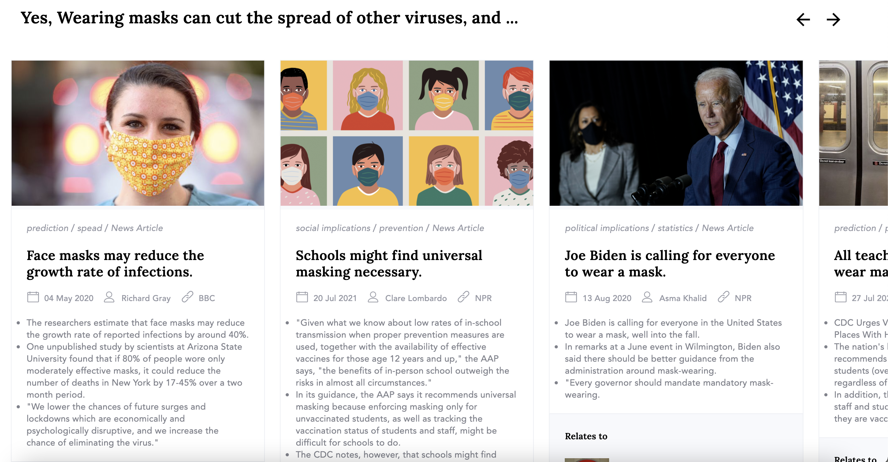
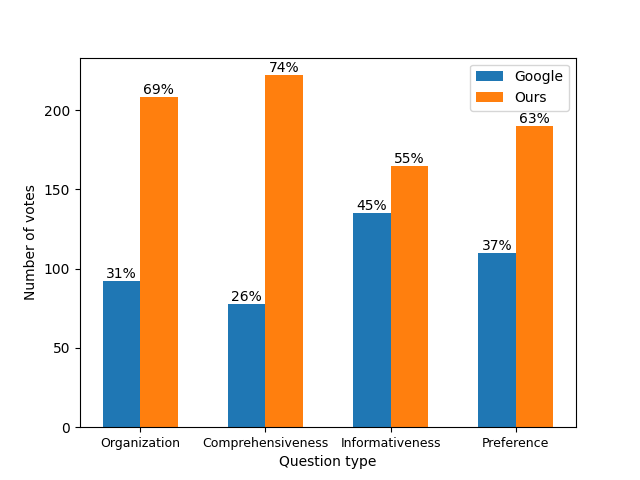
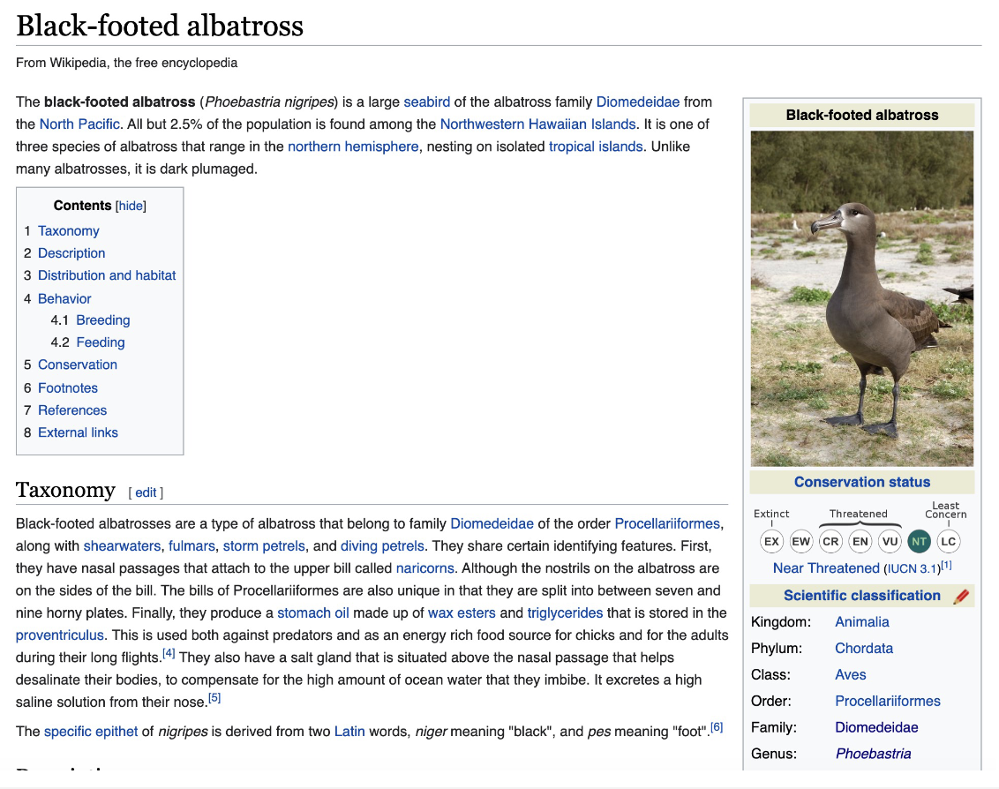
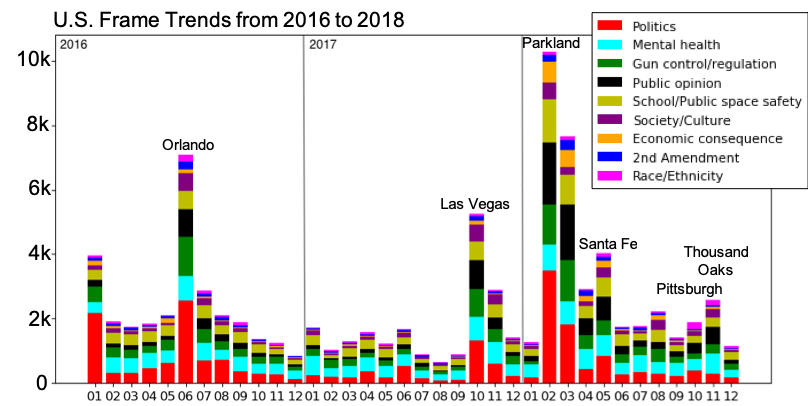

Siyi Liu

siyiliu [at] seas [dot] upenn [dot] edu
3401 Walnut St, Philadelphia, PA
About
I'm a second year master's student at Department of Computer and Information Science, University of Pennsylvania.
Currently, I'm working with Prof. Dan Roth on perspectives discovery of news articles, and Prof. Mark Yatskar on zero-shot image classification with pre-trained text representations. I was also fortunate to work with Prof. Derry Wijaya on News Framing during my undergrad at Boston University.
My research interests lie within the theory and applications of NLP. Currently, I'm interested in studying information pollution, perspectives/argument summarization, visio-linguistic applications, and NLP for social good.
Publications
Peer reviewed
[1] MultiOpEd: A Corpus of Multi-Perspective News Editorials
Siyi Liu, Sihao Chen, Xander Uyttendaele, Dan Roth
NAACL 2021
[Code]
[Slides] [Poster] [Talk]
[2] Detecting frames in news headlines and its application to analyzing news framing trends surrounding US gun violence
Siyi Liu, Lei Guo, Kate Mays, Margrit Betke, Derry Tanti Wijaya
CoNLL 2019
In Progress
[3] Design Challenges for a Practical Perspective-Oriented Search Engine
Siyi Liu* , Sihao Chen*, Xander Uyttendaele, Yi Zhang, William Bruno, Dan Roth
on arXiv
[4] Zero-shot Image Classification with Pre-trained Text Representations
Weiqiu You, Siyi Liu, Mark Yatskar
Other writings
[5] Unsupervised Argument Similarity via Sentence Compression
Siyi Liu, Dan Roth
Final Project for CIS 620 at Upenn
[6] How Good are these Visio-Linguistic Models? An Evaluation of Pre-trained Multimodals on Challenging Datasets.
Siyi Liu, Mark Yatskar
Final Project for CIS 700 at Upenn
[7] Learning to mirror speaking styles incrementally
Siyi Liu*, Ziang Leng*, Derry Wijaya
Directed Study with Prof. Derry Wijaya
Research Projects
Information Pollution
Perspectives-oriented Search in Practice [In progress]
 An example screenshot of our Multi-Perspective Search Engine
 A survey that compares the search results of our system and Google Search
MultiOpEd: A Corpus of Multi-Perspective News Editorials

What is a good text representation for zero-shot image classification?
Pretrain language models on Wikipedia articles and use their text representations as auxiliary-information for zero-shot image classification. [In Progress]

News Framing
Detecting frames in news headlines and its application to analyzing news framing trends surrounding US gun violence
